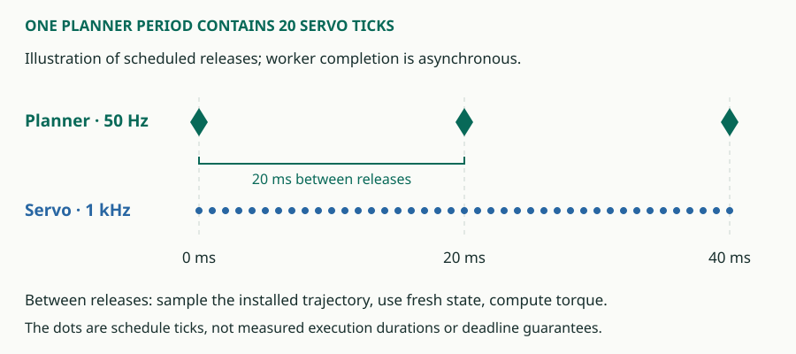

Runtime and execution¶
CORTA coordinates a robotics computation around a Plant observation/command exchange. It separates work that must participate in a tick from work that can finish on a deferred worker. Understanding this distinction explains how a planner, policy inference, fast controller and viewer can coexist without making every component run at the same rate.
The Plant sets the world boundary¶
A Plant supplies observations and receives commands. In a simulator it advances the simulated world; an external Plant exchanges data through the device interface. The app supplies the observation and command types and chooses the Plant implementation. That boundary lets the computation remain recognizable across execution environments, but it does not prove their timing, sensors or actuators are equivalent.
For Digit, the composition is visible in the application entry point. Its model-based graph contains two message pairs: Plant ↔ Servo and Servo ↔ planner. The policy composition replaces the latter with Servo ↔ inference and uses a policy-specific Servo.
Inline and deferred work¶
Inline work participates directly in the tick's execution order. Deferred work runs on a named worker and publishes results that become visible at a defined runtime boundary. A scheduled release is not the same event as completed work or an adopted result.


The graph declares rates, workers and message storage. Copied values or bounded payload leases cross the graph's boundaries. This is different from letting a planning thread mutate a controller's live task objects. For a concrete example, a planner can publish a new preview while Servo continues sampling the previously installed one until the new preview is adopted.
Input, output and observation¶
An operator device is an asynchronous input, not the clock-defining Plant. CORTA adapters handle transport and arrival off the tick path; the app decides what an operator command means. In Digit, supervision adds command shaping, modes and link-loss behavior. Reaching a viewer URL does not give that viewer ownership of the controller.
Telemetry and visualization are observation paths. Their job is to make the run inspectable. Logging has its own bounded producer/drain mechanisms, and viewer delivery may drop samples independently. A 50 Hz scene stream is useful for animation; it cannot establish a 1 kHz contact-force peak.
What determinism and timing claims need¶
Logical execution, replay and wall-clock scheduling answer different questions. A replay checks the recorded decisions within its declared boundary. A configured 1 kHz graph states a period. Neither alone establishes that the whole deployed tick meets a one-millisecond deadline under the target scheduling policy.
Inspect computation duration, Plant exchange, queue/adoption age, overruns and termination behavior separately. The current CORTA contract records remaining boundary and scheduling limitations; the app's validation records scenario-specific measurements. A new transport or robot requires its own evidence.
Read further¶
The CORTA contract, adapter contract and logging contract hold implementation details. The CORTA design develops the execution rules; the adapter reference explains Plant, ingress/egress, state/events and observation boundaries with implemented examples. Their design requirements remain distinct from conformance and application timing evidence.
docs/design/runtime-execution.mdBuilt from
9dd3202a0e62 and this checkout's local edits. Owner contracts and validation determine implemented behavior and demonstrated limits.